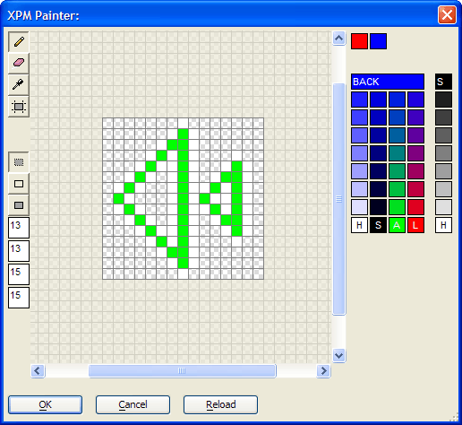

XPM Painter
The XPM Painter provides all the tools you need to create bitmap images for use as buttons on your web components. The maximum size of a bitmap is 40 x 40 pixels.
The images you create are templates. The colors you use are not the actual colors that the bitmap will use, but are instead defining regions where the highlight, shadow, arrow, line, and background colors will be. The Webform Button Template Builder applies the actual bitmap colors to these regions.
|
Function |
Description |
|
Paints cells with the selected color. | |
|
Erases cells. | |
|
Samples and sets the paint color. | |
|
Draws rectangles. | |
|
Sets the rectangle drawing mode to only draw the fill. | |
|
Sets the rectangle drawing mode to only draw the line. | |
|
Sets the rectangle drawing mode to draw both the fill and the line. |
The four numbers at the left side of the dialog set the position and size of the image within a 40 x 40 pixel cell.
top number = the vertical offset to the image
second number = the horizontal offset to the image
third number = the height of the image
bottom number = the width of the image

Left click on a color in the palette to make it the line color. Right click on a color to make it the fill color (for rectangles).
The basic rule for selecting colors is to use the same color selection for all 7 members of the template. The colors are arbitrarily defined as Background (the wide blue bottom at the top of the color palette), Highlight (the first column), Shadow (the second column), Arrow (the third column), and Line (the fourth column).
Cells that are not colored (with the checker pattern) are transparent.
 Note : You do not have
to define a background for an image if it has transparent cells. If you
do have a background, remember that the foreground is painted over the
background.
Note : You do not have
to define a background for an image if it has transparent cells. If you
do have a background, remember that the foreground is painted over the
background.
See Also
Supported By
Alpha Five Version 6 and Above
Limitations
Web publishing applications only.